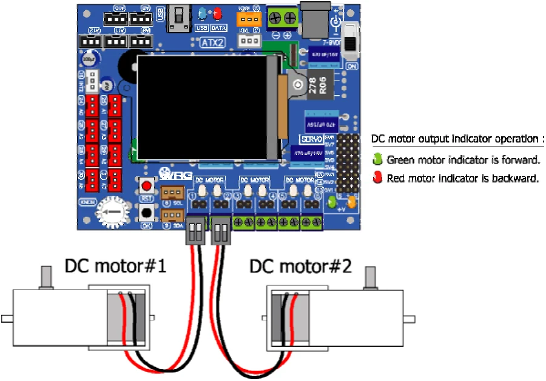

4.2.5.1 motor
Drive DC motor function.
Syntax
void motor(char _channel,int _power)Parameter
_channel - DC motor output. Includes :
1 to 6 for each channel 1, 2, 3, 4, 5 or 6
12 for channel 1 and 2
34 for channel 3 and 4
56 for channel 5 and 6
100 or ALL or ALL4 for channel 1 to 4
106 or ALL6 for all channels (1 to 6)
_power - Power value. It is -100 to 100
If set _power as positive value (1 to 100), motor moves forward
If set_power as negative value (-1 to -100), motor moves backward If set as 0, motor stop but not recommended. Please choose the motor_stop function better.

Example 4-12
#include <ATX2.h>
void setup()
{
OK(); // Wait for OK
}
void loop()
{
motor(1,60); // Drive motor 1 with 60% power
delay(500); // Driving time 0.5 second
motor(1,-60); // Drive motor 1 backward with 60% power
delay(500); // Driving time 0.5 second
}Original manual, pages 63–64